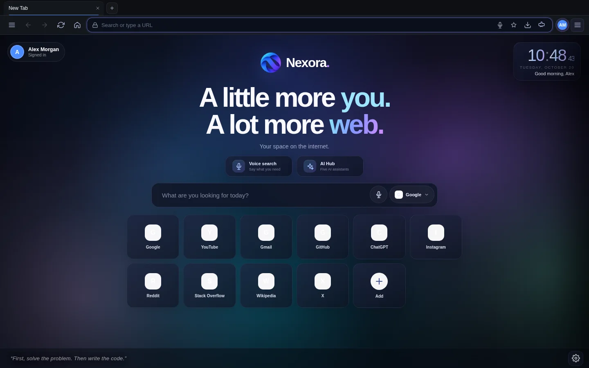
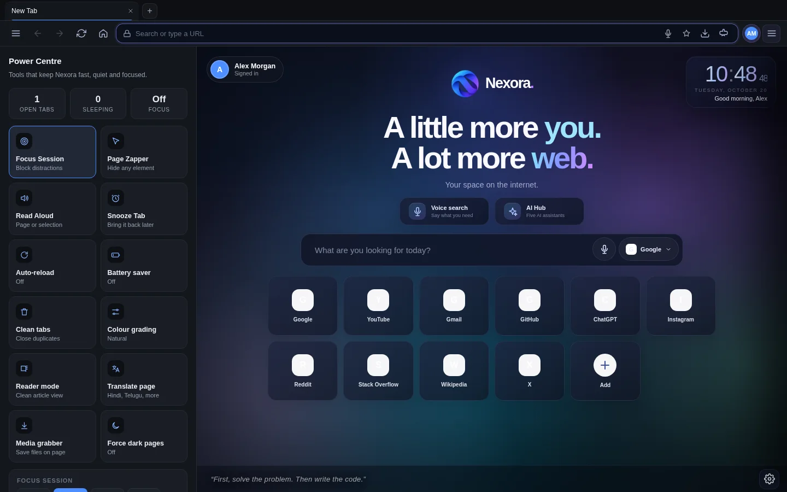
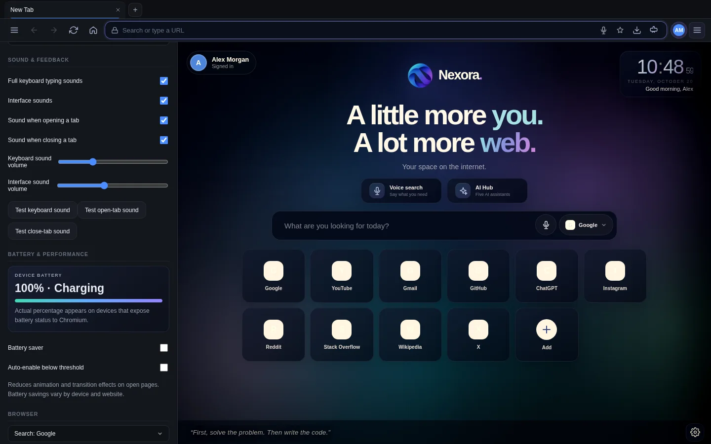
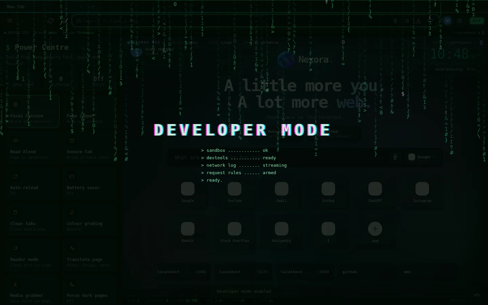
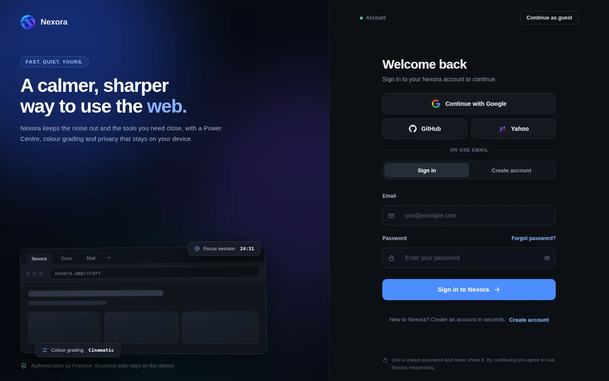

The calm, fast browser built around you.
Nexora is a desktop browser on the Chromium engine, with a Power Centre, quiet ad blocking, colour grading and sounds built in. Nothing to install on top.
Free. Windows 10 and 11. Other platforms are not available yet.

Fewer extensions. More browser.
The things people usually bolt on are already part of Nexora, and they work the same everywhere.
Power Centre
Focus Session, Page Zapper, Reader mode, Translate, Read Aloud, Media grabber, Snooze and Auto-reload in one panel.
Quiet ad blocking
Blocks ad and tracker requests, hides the empty boxes they leave behind and skips YouTube video ads. No pop-ups, no counters.
Colour grading
Presets like Cinematic, Warm evening and Monochrome, plus sliders for brightness, contrast, saturation, warmth and tint.
Sounds that feel good
Soft typing sounds in four styles and gentle chimes for new tabs, closing tabs and new windows. Every one has an off switch.
Developer mode
One switch turns the browser into a green terminal-style workspace with a live status strip and a matrix boot sequence.
Chrome extensions
Open the Chrome Web Store and click Add to Nexora. Many extensions work, and each one has its own on and off slider.
Force dark pages
Turn every website dark with a single switch, while images and video keep their real colours.
Private by default
Ghost windows keep no history. Your browsing data stays on your device. You can use Nexora as a guest without an account.
Clean, familiar layout
A Chrome-style toolbar, address bar suggestions from tabs, bookmarks, history and search, and keyboard shortcuts you already know.
Your toolbox, one click away
Press Ctrl+Shift+L and everything useful is in one calm panel.
- Block distracting sites for 15 to 90 minutes with Focus Session.
- Hide any annoying element on a site for good with the Page Zapper.
- Read articles in a clean view, or have them read aloud.
- Translate a page to Hindi, Telugu, Tamil and more in one click.
- Save the videos, audio and files on a page with the Media grabber.

Make the web look the way you like
Warm it up for the evening, add contrast for photos, or go black and white. Changes apply instantly.
- Eight presets, from Natural to High contrast.
- Five sliders for fine control.
- Applies to web pages, so your content stays easy on the eyes.

A browser that switches modes with you
Turn on Developer mode for a terminal-style interface, a live status strip and quick access to DevTools.
- Matrix-style boot sequence and a power-up sound.
- Monospace interface with a glowing green accent.
- Switch back to the normal look at any time.

Sign in, or just start browsing
Create an account with email, Google, GitHub or Yahoo to personalise Nexora, or continue as a guest. You never need an account to browse.
- Secure sign-in provided by Firebase Authentication.
- Your history and bookmarks stay on your device.
- Customise your avatar, colour and display name.

Get Nexora
Version 0.9.7. Free to use.
macOS and Linux
Not available yet.
Coming laterGood to know
Is Nexora free?
Yes. Nexora is free to download and use.
Does it work with Chrome extensions?
Many do. Open the Chrome Web Store inside Nexora and click Add to Nexora. Nexora runs on Electron, which supports only part of Chrome's extension system, so some extensions will not work. VPN extensions that depend on Chrome's proxy feature cannot work. Use a VPN app on your PC instead.
Will it block every ad?
No ad blocker can promise that. Nexora blocks known ad and tracker networks, hides empty ad boxes and skips YouTube video ads. Ads served from a site's own domain can still appear.
What data does Nexora collect?
Your history, bookmarks and settings stay on your device. If you sign in, your email and name are handled by Firebase Authentication. Read the privacy page for details.
Does Nexora have voice search?
On Windows, the microphone button uses Windows speech recognition. It needs a working microphone and, for the best results, the Windows setting "Online speech recognition" turned on. Settings in Nexora include a voice check that tells you what is missing.
Can I use it without an account?
Yes. Choose "Continue as guest" on the welcome screen.